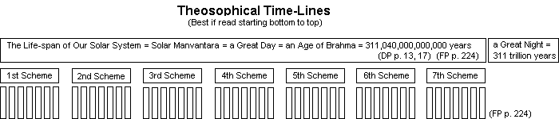
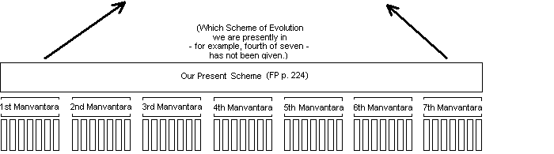
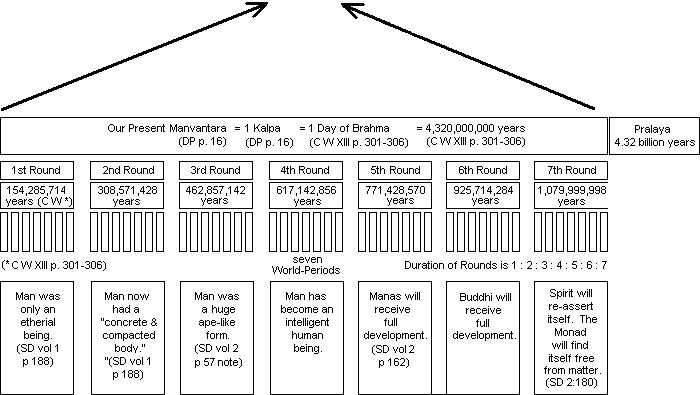
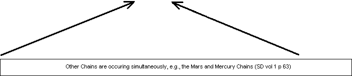
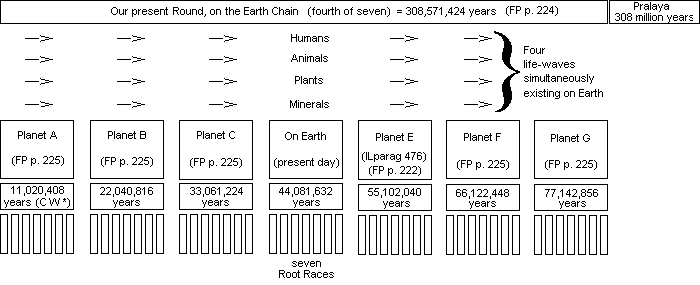

Lessons in Theosophy
Lesson 16, History of the Solar System
-- 311 trillion years --
The history of our solar system is long indeed. Theosphy teaches that the total active life
of our solar system (a “solar manvantara”) will be 311 trillion (311,000,000,000,000) years (SD vol II p. 70). This lesson
will explain the basic periods of that time period.
-- Rounds, Chains, Manvantaras --
Theosophy groups the history of our solar system (and humanity) into groups. The groups are
root-races, Rounds, Chains, and Manvantaras. The number seven is important
to the entire plan;
- Seven Races (“Root-races”) = the active period of our planet (a “World-period”) = one Round
- Seven Rounds (the time we spend on seven planets) = one Chain
- Seven Chains = one Manvantara
- the active life of our solar system = one Solar Manvantara = 311 trillion years
Here are descriptions of each time period.
|
Figure 1. one World-Period or Globe (present-day Earth)
(FP p. 52)
-- Race (“Root-race” in Theosophical terminology) --
Earth is scheduled for seven races.
- 1st race (has disappeared.)
- 2nd race (has disappeared.)
- 3rd race Lemurian (Negro)
- 4th race Atlantean (Oriental)
- 5th race Aryan (Caucasian)
- 6th race (yet to appear. First examples will appear 600 years in the future.)
- 7th race (yet to appear.)
The lengths of the races are not equal, but occur at a ratio of 1 : 2 : 3 : 4 : 5 : 6 : 7. (C W XIII pp. 301-306)
-- World-Period or Globe --
A World-Period is the time that our life-wave (human, animal, plant, etc.) spends on one planet.
One World-Period = seven Root-Races.
A Round is not the active life of a planet. Each planet hosts a "World-Period," which is
the time a life-wave (human, animal, etc.) inhabits it. At the end of that World-Period,
the life-wave moves onto another planet. When the life-wave moves on, the planet still has other
events yet to happen. A Round is only the time of one life-wave on one particular planet.
We humans are now in the last half of our Round on Earth. At the end of this Round, we will
move on to the fifth planet of our Chain.
-- Chain --
|
Figure 3. one Chain
A Chain is a group of seven planets or Globes.
-- Round --
|
Figure 3. one Round
A Round is time spent on seven planets or Globes.
Our Earth is the fourth of seven Globes in this Round.
The duration of the Globes of our Round are not equal, but occur at a ratio of 1 : 2 : 3 : 4 : 5 : 6 : 7.
(C W XIII pp. 301-306)
- Planet A: 11,020,408 years
- Planet B: 22,040,816 years
- Planet C: 33,061,224 years
- Earth: 44,081,632 years
- Planet E: 55,102,040 years
- Planet F: 66,122,448 years
- Planet G: 77,142,856 years
-- Manvantara --
|
Figure 3. one Manvantara
A Manvantara is time spent on seven Rounds or 49 Globes (49 planets). Our present Manvantara will last 4.3 billion years
~~~
Our solar system has even larger cycles, culminating in the active part of one
entire solar-system cycle (“solar manvantara”) of 311 trillion years.
~~~
The numbers are large. Here are some approximate numbers:
- the active life of our planet = 44 million years
- our present Round = 308 million years
- our present Manvantara = 4.3 billion years
- the active life of our solar system = 311 trillion years
-- Manvantaras, Kalpas, Days of Brahman --
There are special terms in Theosophical literature that need to be explained. They are
Yuga, Maha-Yuga, Kalpa, Maha-Kalpa, Manvantara, Maha-manvantara, Day of Brahman,
Year of Brahman, and Period of Brahman. All of these terms are explained on the Yuga chart below.
(Note the word “Maha” means “great”, so a Maha-Yuga is a Great Yuga.)
|
Figure 4
A few terms need to be shown in equivalent values:
1 Kalpa
= 1 Day of Brahman (C W XIII pp. 301-306)
= 1 Manvantara (DP p. 16)
= 4.3 billion years (C W XIII pp. 301-306)
Not all Kalpas are of the same length. (SD II 69)
100 Years of Brahma (SD II 69-70)
= an Age of Brahma
= 1 Maha-Kalpa
= 1 Solar Manvantara
= the active age of our solar system
= 311 trillion years
A Pralaya is a period of rest and non-activity. For example,
the active period of our solar system (311 trillion years)
is called a Solar Manvantara. It will be followed by an equal time of rest and non-activity, called a
Solar Pralaya.
The Christian “Last Judgement” actually refers to the upcoming 311 trillion Maha (“Great”) Pralaya or period of rest.
“...the whole period of Mahapralaya [is] the "Great NIGHT," namely, 311,040,000,000,000 years of absorption in Brahm. The day of "Be-With-Us" is this period of rest
or Paranirvana.... It corresponds to the Day of the Last Judgment of the Christians, which has been sorely materialised by their religion.”
(SD vol 1 p 88)
The word “Sabbath”, as used in the Bible, refers to a Pralaya. If the writers of the Bible had used the
genuine meaning of the word, we would be having seven-day work-weeks, which would be followed by seven-day weekends!
~~~
It is now time to put all the pieces together into one chart.
|
 | Manvataras (periods of activity) are followed by Pralayas
(periods of rest) of equal duration of time.
|
 | The term "Scheme" is used by Jinarajadasa (FP) to descibe this
time period, but there are some Theosophists who avoid this term.
|
 |
 |
 |
|
 |
|
|
|
|
 |
 |
 |
|
|
|
|
copyright © Nick Mojzesz,
2005, 2006, & 2007
all rights reserved. |
| |
| |
|